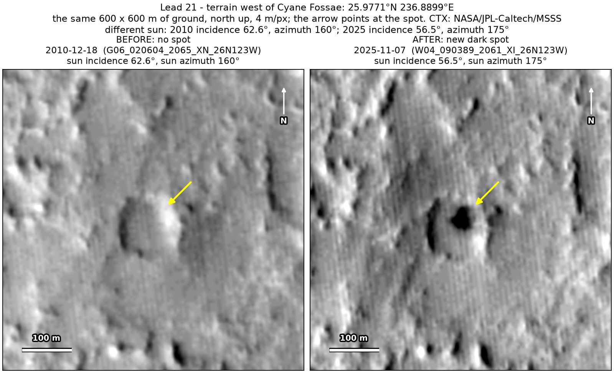
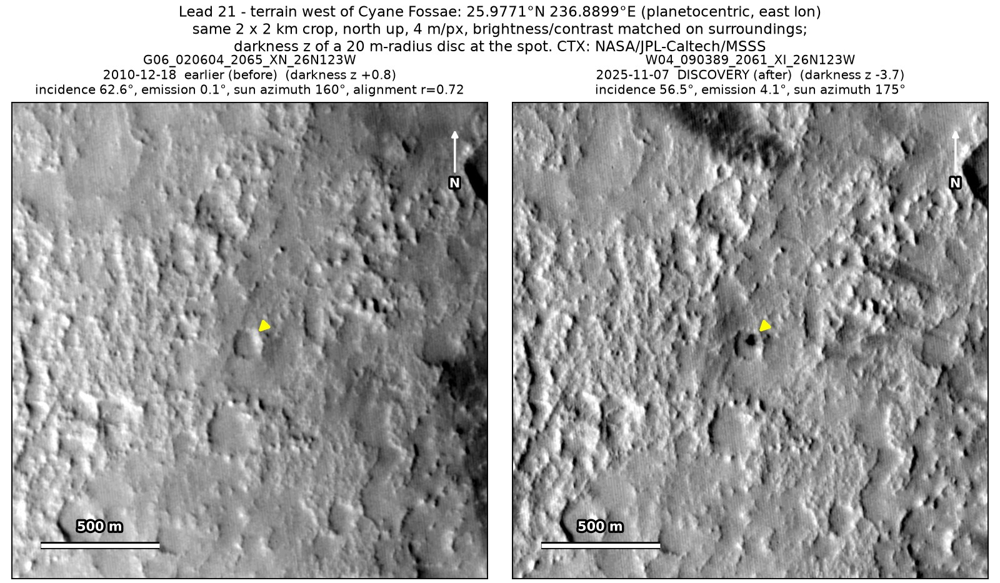
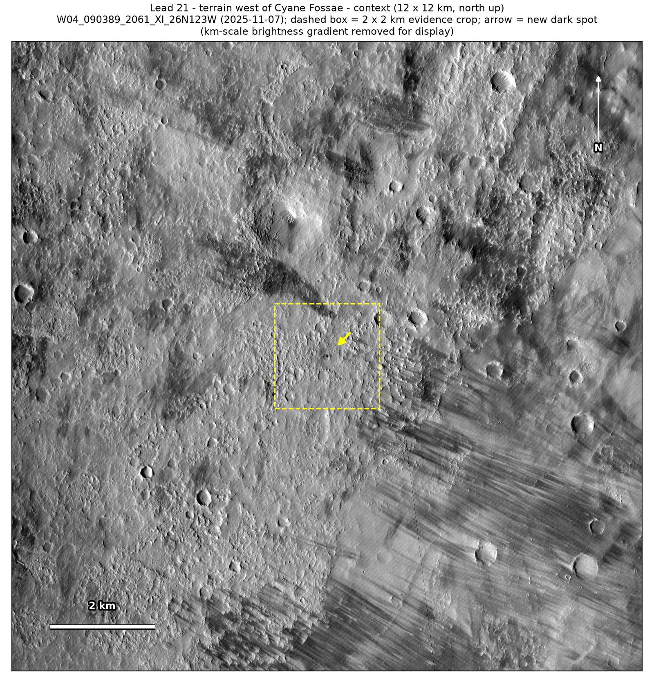
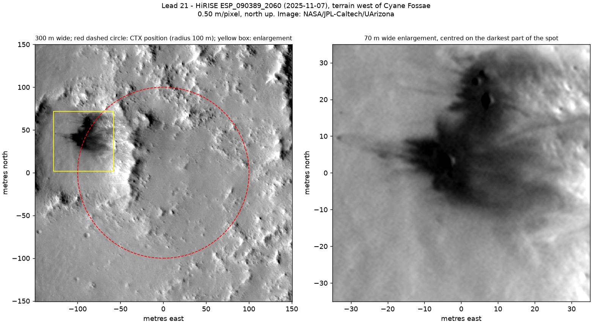
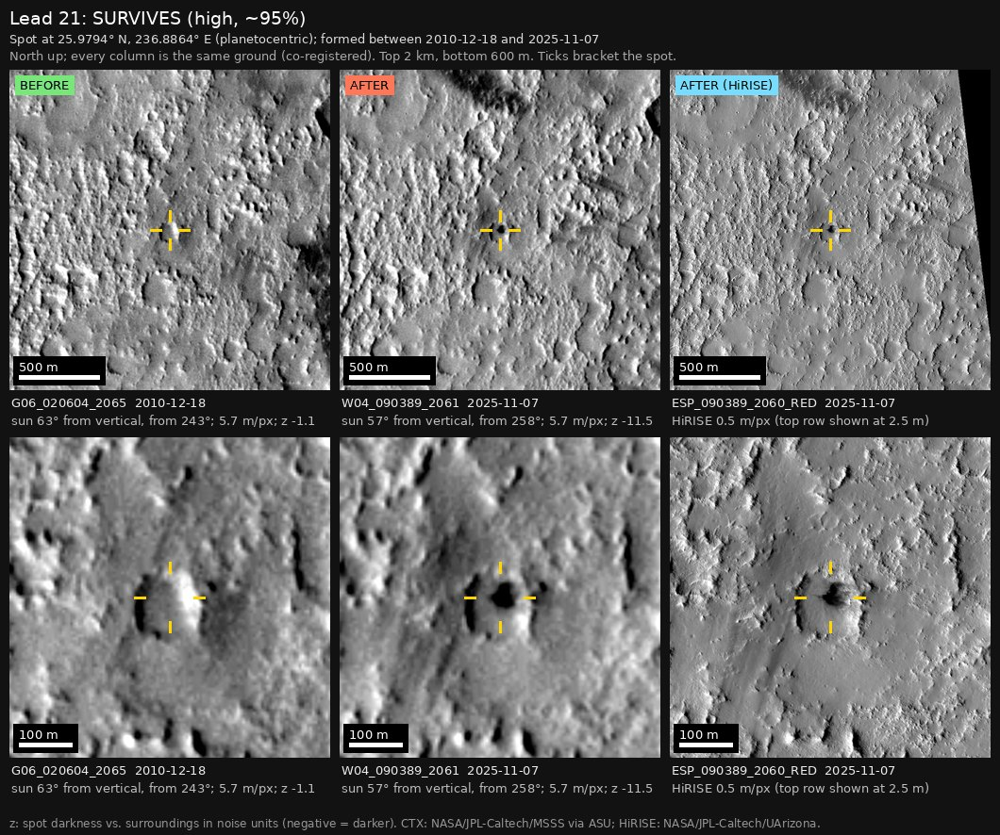
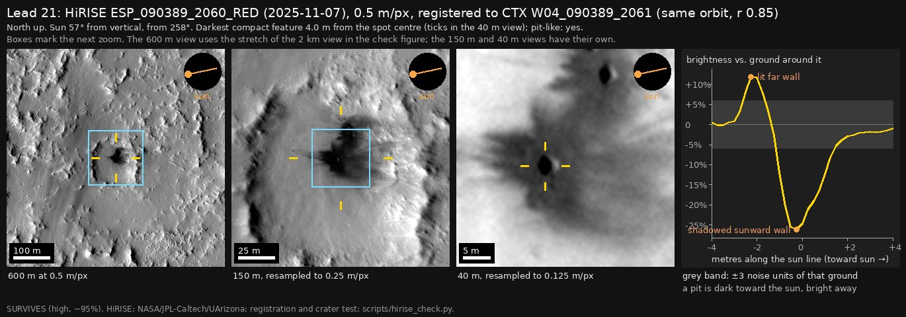

Professor of Mathematics
Paata Ivanisvili
Department of Mathematics, University of California, Irvine

← Possible new impact sites on Mars
Candidate 21: Terrain west of Cyane Fossae
Strong · roughly 75%

What changed. A black blob 40 to 50 m across appeared inside a hollow about 100 m wide west of Cyane Fossae between December 2010 and November 2025, and is seen in one CTX image and in a HiRISE image taken on the same orbit.
Why it may be a new impact. The only earlier image, from December 2010, shows a bright, sunlit patch where the blob now lies, while a dark feature 280 m away shows clearly in it. In the HiRISE image the blob is a pattern of dark rays spreading in several directions around at least three dark ovals 2 to 3 m across, whose bright east rims show they are small craters lit from the west, which is how a small new impact looks.
- Location
- 25.977° N, 236.890° E (123.110° W)
- Absent
- 18 December 2010
- Present
- 7 November 2025 (two images, CTX and HiRISE)
- Size
- Rayed dark zone 40 to 50 m across around at least three small craters, each 2 to 3 m across, seen by HiRISE
- Confidence
- Strong candidate; roughly 75% that it is a new impact.
- Caveat
- By chance, NASA’s HiRISE camera photographed the spot on 7 November 2025, on the same orbit as the CTX image in which it was found, after it formed. A dark streak left by a dust avalanche on the hollow’s wall is possible, as such streaks occur in pits of Cyane Fossae, but the craters at its centre and rays pointing up the slope argue against it, and an impact can also set off such a streak. Only one earlier image, from December 2010, shows the ground before, so when it formed is known only to within about 15 years. Like every candidate here, it is unconfirmed: see the caveat.




